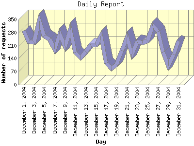

Report generated by Analog 5.91beta1 and Report Magic 2.21
|
Web Server Statistics for "Harish Narayanan (hnarayan) - December 2004" Report generated by Analog 5.91beta1 and Report Magic 2.21 |
The Daily Report identifies the activity for each day within the reporting period. Remember that one page hit can result in several server requests as the images for each page are loaded.

| Day | Number of requests | Number of bytes transferred | Percentage of the bytes | Percentage of the requests | |
|---|---|---|---|---|---|
| 1. | December 1, 2004 | 290 | 14.424 MB | 5.29% | 4.38% |
| 2. | December 2, 2004 | 231 | 11.945 MB | 4.38% | 3.49% |
| 3. | December 3, 2004 | 228 | 6.122 MB | 2.25% | 3.45% |
| 4. | December 4, 2004 | 341 | 16.643 MB | 6.11% | 5.15% |
| 5. | December 5, 2004 | 260 | 8.629 MB | 3.17% | 3.93% |
| 6. | December 6, 2004 | 242 | 12.998 MB | 4.77% | 3.66% |
| 7. | December 7, 2004 | 190 | 6.819 MB | 2.50% | 2.87% |
| 8. | December 8, 2004 | 272 | 8.128 MB | 2.98% | 4.11% |
| 9. | December 9, 2004 | 206 | 13.232 MB | 4.86% | 3.11% |
| 10. | December 10, 2004 | 296 | 11.153 MB | 4.09% | 4.47% |
| 11. | December 11, 2004 | 172 | 5.529 MB | 2.03% | 2.60% |
| 12. | December 12, 2004 | 144 | 6.414 MB | 2.35% | 2.18% |
| 13. | December 13, 2004 | 177 | 4.358 MB | 1.60% | 2.67% |
| 14. | December 14, 2004 | 215 | 9.043 MB | 3.32% | 3.25% |
| 15. | December 15, 2004 | 215 | 20.377 MB | 7.48% | 3.25% |
| 16. | December 16, 2004 | 262 | 11.608 MB | 4.26% | 3.96% |
| 17. | December 17, 2004 | 115 | 3.632 MB | 1.33% | 1.74% |
| 18. | December 18, 2004 | 85 | 1.496 MB | 0.55% | 1.28% |
| 19. | December 19, 2004 | 107 | 8.441 MB | 3.10% | 1.62% |
| 20. | December 20, 2004 | 183 | 5.501 MB | 2.02% | 2.77% |
| 21. | December 21, 2004 | 253 | 6.172 MB | 2.27% | 3.82% |
| 22. | December 22, 2004 | 164 | 3.452 MB | 1.27% | 2.48% |
| 23. | December 23, 2004 | 230 | 6.549 MB | 2.40% | 3.48% |
| 24. | December 24, 2004 | 224 | 8.718 MB | 3.20% | 3.38% |
| 25. | December 25, 2004 | 235 | 3.631 MB | 1.33% | 3.55% |
| 26. | December 26, 2004 | 317 | 6.016 MB | 2.21% | 4.79% |
| 27. | December 27, 2004 | 286 | 8.753 MB | 3.21% | 4.32% |
| 28. | December 28, 2004 | 176 | 3.358 MB | 1.23% | 2.66% |
| 29. | December 29, 2004 | 103 | 12.273 MB | 4.50% | 1.56% |
| 30. | December 30, 2004 | 162 | 9.644 MB | 3.54% | 2.45% |
| 31. | December 31, 2004 | 236 | 17.417 MB | 6.39% | 3.57% |
Most active day December 26, 2004 : 166 pages sent. 341 requests handled. 17,451,637.00 served.
Daily average: 213 requests handled. 8.790 MB served.
This report was generated on January 7, 2005 16:41.
Report time frame December 1, 2004 01:06 to December 31, 2004 23:42.
| Web statistics report produced by: | |
 Analog 5.91beta1 Analog 5.91beta1 |  Report Magic 2.21 Report Magic 2.21 |